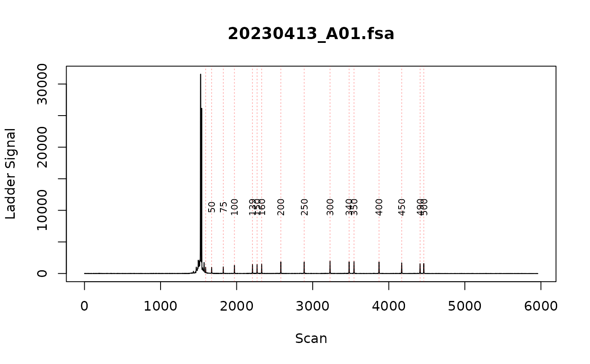

Ladder and bp sizing
find_ladders.RdFind the ladder peaks in and use that to call bp size
Usage
find_ladders(
fragments_trace,
ladder_channel = "DATA.105",
signal_channel = "DATA.1",
ladder_sizes = c(50, 75, 100, 139, 150, 160, 200, 250, 300, 340, 350, 400, 450, 490,
500),
ladder_start_scan = NULL,
minimum_peak_signal = NULL,
scan_subset = NULL,
ladder_selection_window = 5,
max_combinations = 2500000,
warning_rsq_threshold = 0.998,
show_progress_bar = TRUE
)Arguments
- fragments_trace
list from 'read_fsa' function
- ladder_channel
string: which channel in the fsa file contains the ladder signal
- signal_channel
string: which channel in the fsa file contains the data signal
- ladder_sizes
numeric vector: bp sizes of ladder used in fragment analysis. defaults to GeneScan™ 500 LIZ™
- ladder_start_scan
numeric: indicate the scan number to start looking for ladder peaks. Usually this can be automatically found (when set to NULL) since there's a big spike right at the start. However, if your ladder peaks are taller than the big spike, you will need to set this starting scan number manually.
- minimum_peak_signal
numeric: minimum signal of peak from smoothed signal.
- scan_subset
numeric vector (length 2): filter the ladder and data signal between the selected scans (eg scan_subset = c(3000, 5000)). to pracma::savgol().
- ladder_selection_window
numeric: in the ladder assigning algorithm, the we iterate through the scans in blocks and test their linear fit ( We can assume that the ladder is linear over a short distance) This value defines how large that block of peaks should be.
- max_combinations
numeric: what is the maximum number of ladder combinations that should be tested
- warning_rsq_threshold
The value for which this function will warn you when parts of the ladder have R-squared values below the specified threshold.
- show_progress_bar
show progress bar
Value
This function modifies list of fragments_trace objects in place with the ladder assigned and base pair calculated.
Details
This function takes a list of fragments_trace files (the output from read_fsa) and identifies the ladders in the ladder channel which is used to call the bp size. The output is a list of fragments_traces.
In this package, base pair (bp) sizes are assigned using a generalized additive model (GAM) with cubic regression splines. The model is fit to known ladder fragment sizes and their corresponding scan positions, capturing the relationship between scan number and bp size. Once trained, the model predicts bp sizes for all scans by interpolating between the known ladder points. This approach provides a flexible and accurate assignment of bp sizes, accommodating the slightly non-linear relationship.
Use plot_data_channels() to plot the raw data on the fsa file to identify which channel the ladder and data are in.
The ladder peaks are assigned from largest to smallest. I would recommend excluding size standard peaks less than 50 bp (eg size standard 35 bp).
Each ladder should be manually inspected to make sure that is has been correctly assigned.
See also
plot_data_channels() to plot the raw data in all channels. plot_ladders() to plot the assigned ladder
peaks onto the raw ladder signal. fix_ladders_interactive() to fix ladders with
incorrectly assigned peaks.
Examples
fsa_list <- lapply(cell_line_fsa_list[1], function(x) x$clone())
find_ladders(fsa_list, show_progress_bar = FALSE)
# Manually inspect the ladders
plot_ladders(fsa_list[1])
